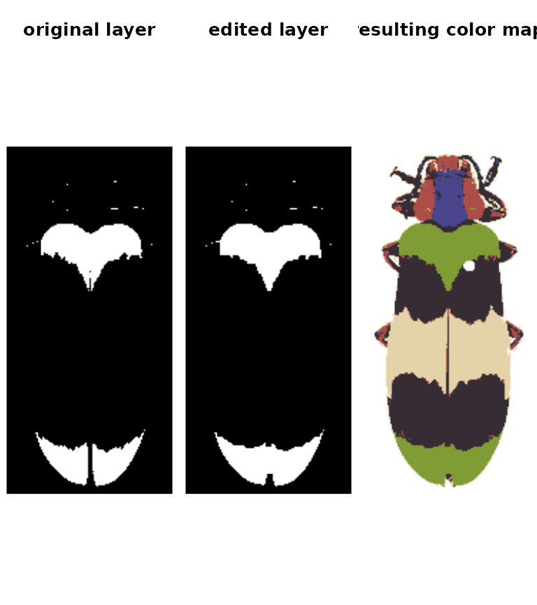

Introduction
Introduction.Rmd
recolorize: color-based image segmentation (for people with other things to do)
- Introduction
-
Step 0: Image acquisition and preparation
-
Step 1: Loading & processing images
-
Step 2: Initial clustering
-
Step 3: Refinement
-
Step 4: Tweaks & edits
- Step 5: Visualizing & exporting output
You can also tour the functions in the function gallery.
The recolorize package is a toolbox for making color maps, essentially color-based image segmentation, using a combination of automatic, semi-automatic, and manual procedures. It has four major goals:
Provide a middle ground between automatic segmentation methods (which are hard to modify when they don’t work well) and manual methods (which can be slow and subjective).
Be deterministic whenever possible, so that you always get the same results from the same code.
Be modular and modifiable, so that you can tailor it for your purposes.
Play nice with other color analysis tools.
The color map above, for example, was generated using a single function which runs in a few seconds (and is deterministic):
library(recolorize)
# get the path to the image (comes with the package, so we use system.file):
img <- system.file("extdata/corbetti.png", package = "recolorize")
# fit a color map (only provided parameter is a color similarity cutoff)
recolorize_obj <- recolorize2(img, cutoff = 45)Notice what we didn’t have to input: we didn’t have to declare how many colors we expected (5), what we expect those colors to be (red, green, blue, black, and white), which pixels to include in each color patch, or where the boundaries of those patches are.
This introduction is intended to get you up and running with the recolorize package. Ideally, after reading it, you will have enough information to start to play around with the set of tools that it provides in a way that suits what you need it to do.
I have tried not to assume too much about the reader’s background knowledge and needs, except that you are willing to use R and you have a color segmentation problem you have to solve before you can do something interesting with images. I primarily work with images of animals (beetles, fish, lizards, butterflies, snakes, birds, etc), and that will probably come through in the documentation. But it should work just as well for other kinds of images. Maybe better!
I hope that this package will be helpful to you, and that if it is, you will share it with others who might find it helpful too. I had a lot of fun discussions with a lot of interesting people while I was making it, for which I’m very grateful.
If something is unclear or you find a bug, please get in touch or file an issue on the GitHub page. Suggestions for improvements are always welcome!
Quick start
The bare minimum to start toying around with the package.
The basic recolorize workflow is initial clustering step -> refinement step -> manual tweaks.
Images should first be color-corrected and have any background masked out, ideally with transparency, as in the image above, for example (Chrysochroa corbetti, taken by Nathan P. Lord, used with permission and egregiously downsampled to ~250x150 pixels by me).
In the initial clustering step, we bin all of the pixels into a smaller number of clusters, but still more than we expect to end up with at the end. In this case, we’ll end up with 8 clusters (\(2^3\)):
init_fit <- recolorize(img, method = "hist", bins = 2,
color_space = "sRGB")
#>
#> Using 2^3 = 8 total bins- Followed by a refinement step where we combine clusters by their similarity:
refined_fit <- recluster(init_fit, cutoff = 45)

The recolorize2 function above calls these functions in sequence, since they tend to be pretty effective in combination.
- Finally, we can do manual refinements to clean up the different color layers, for example performing simple morphological operations on individual layers:
final_fit <- editLayer(refined_fit, 3,
operation = "fill", px_size = 4)
- Once you have a color map you’re happy with, you can export to a variety of formats. For instance, if I wanted to run Endler’s adjacency and boundary strength analysis in the
pavopackage, using human perception:
adj <- recolorize_adjacency(final_fit, coldist = "default", hsl = "default")
#> Warning: no DISPLAY variable so Tk is not available
#> Using single set of coldists for all images.
#> Using single set of hsl values for all images.
print(adj[ , grep("m_dL|m_dS", colnames(adj))]) # just print the chromatic and achromatic boundary strength values
#> m_dS m_dL
#> 40.59881 40.27214Batch processing
You can also batch process images using the same parameters, although recolorize functions only deal with one image at a time, so you will have to use a for loop or define a new function to call the appropriate functions in the right order:
# get all 5 beetle images:
images <- dir(system.file("extdata", package = "recolorize"), "png", full.names = TRUE)
# make an empty list to store the results:
rc_list <- vector("list", length = length(images))
# run `recolorize2` on each image
# you would probably want to add more sophisticated steps in here as well, but you get the idea
for (i in 1:length(images)) {
rc_list[[i]] <- suppressMessages(recolorize2(images[i], bins = 2,
cutoff = 30, plotting = FALSE))
}
# plot for comparison:
layout(matrix(1:10, nrow = 2))
par(mar = rep(0, 4))
for (i in rc_list) {
plotImageArray(i$original_img)
plotImageArray(recoloredImage(i))
}
# given the variety of colors in the dataset, not too bad,
# although you might go in and refine these individually
# and clean up our working space a bit
rm(rc_list)The recolorize package mostly works internally with objects of class recolorize, which contains a few different elements that are worth understanding as you work through the rest of the documentation (linked at the bottom).
The recolorize class
Objects of S3 class recolorize are lists with several elements:
attributes(final_fit)
#> $names
#> [1] "original_img" "pixel_assignments" "sizes"
#> [4] "centers" "call" "recolored_img"
#>
#> $class
#> [1] "recolorize"original_imgis a arastermatrix, essentially a matrix of hex color codes. This is a more lightweight version of the typical 3D/4D color image array, and can be plotted easily by runningplot(final_fit$original_img).centersis a matrix of RGB centers (0-1 range) for each of the color patches. Their order matches the index values in thepixel_assignmentsmatrix, and can be plotted as a color bar usingplotColorPalette(final_fit$centers).sizesis a vector of patch sizes, whose order matches the row order ofcenters.pixel_assignmentsis a paint-by-numbers matrix, where each pixel is coded as the color center to which it was assigned. For example, cells with a1have been assigned to the color represented by row 1 ofcenters. Background pixels are marked as 0.callis the set of operations that was applied to this recolorize object:
final_fit$call
#> [[1]]
#> recolorize(img = img, method = "hist", bins = 2, color_space = "sRGB")
#>
#> [[2]]
#> recluster(recolorize_obj = init_fit, cutoff = 45)
#>
#> [[3]]
#> editLayer(recolorize_obj = refined_fit, layer_idx = 3, operation = "fill",
#> px_size = 4)Every time you modify a recolorize object, the new modification is appended as the next item down on this list, so that you can recreate exactly what you did to make a given color map.
If you plot the whole recolorize object, you’ll get back the plot you see above: the original image, the color map (where each pixel has been recolored), and the color palette. You can also plot each of these individually:
You can get the recolored image by calling recoloredImage:
# type = raster gets you a raster (like original_img); type = array gets you an
# image array
recolored_img <- recoloredImage(final_fit, type = "array")
par(mar = rep(0, 4))
plotImageArray(recolored_img)recoloredImage is just a shortcut function for constructImage, which lets you decide which colors to assign to each category in case you want to swap out the palette:
colors <- c("navy", "lightblue", "blueviolet",
"turquoise", "slateblue", "royalblue",
"aquamarine", "dodgerblue")
blue_beetle <- constructImage(final_fit$pixel_assignments,
centers = t(col2rgb(colors) / 255))
# a very blue beetle indeed:
par(mar = rep(0, 4))
plotImageArray(blue_beetle)This should give you a good idea of how this package works, what it’s capable of doing, and the different modular components that go into its structure. This is more of a toolbox than a single method, so you will almost certainly not need all of these options. If you’d like to learn more, I would recommend reading through the vignettes linked above (in order) on each of the steps and messing around with your own images. And check the GitHub (https://github.com/hiweller/recolorize) for links out to examples using real data!
General guidelines
This is a lot of options. How do I choose a procedure?
Recolorize is a toolbox, not a single algorithm. Most things will more or less work; if it looks reasonable, it is. Keep in mind that there is a big difference between getting slightly different color maps and getting qualitatively different results. Keep your final goal in mind. You can also try lots of different things and see if it makes a real difference.
I wish I could write a single function that would do all of these steps in the correct sequence and produce perfect results; the reason that function does not exist is because I find I have to experiment a fair amount with every image set, and I often end up with a different order of operations depending on the problem.
Start with recolorize2 and identify the common problems you’re encountering. Does it make sense to batch process all of your images, then refine them individually? Is it better to choose a different cutoff for each image? Luckily, these functions are relatively fast, so you can test out different options.
You can also get way fancier with cutoffs than I have here. This package is built on some pretty simple scaffolding: you get a starting set of clusters, then you modify them. If you have a better/more refined way of deciding which colors to cluster, then go for it. I will soon be adding some example workflows from collaborators which should be helpful.
There is another very tempting option: make a small training set of nice color maps manually with recolorize, then use those to either fit a statistical model for other fits or use machine learning to do the rest. I think this is a really compelling idea; I just haven’t tested it yet. Maybe you want to try it out?
Can you define an optimality condition to do all the segmentation automatically?
As far as I can tell, no. This is because of the problem I pointed out at the beginning: the ‘correct’ segmentation depends on your particular question more than anything else.
What about batch processing?
Every function in this package operates on a single image at a time. This is because there is so much variation in how people go about batch processing anything: if I tried to impose what I considered to be a useful batch processing structure, within a few months I would find that it was too inflexible for some new project structure someone else needed to use it for. So, instead, the idea is that you can write your own batch processing functions or for loops as needed to suit your data structure. Or maybe you come up with something better than I can think of, in which case, please let me add it to the package and add you as an author!